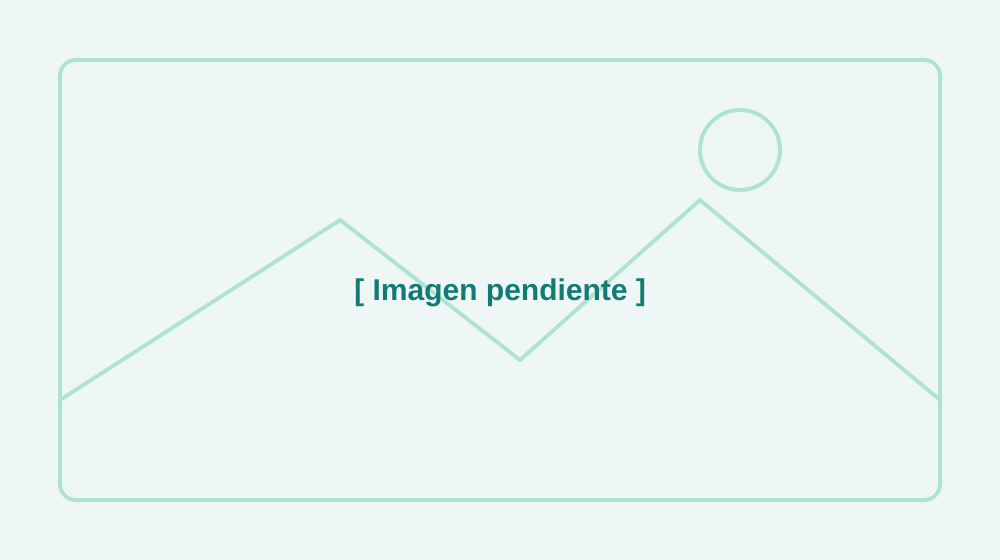

Cómo usar esta página: sustituye los textos marcados en
[ corchetes ] por la historia real del club.
Para añadir una foto, coloca el archivo en img/ y cambia el src
de las etiquetas <img> de esta página. Los pies de foto (figcaption) también son editables.
Cómo empezó todo
[ Contad aquí el origen del club: ¿de dónde surgió la idea?, ¿quiénes fueron los primeros en juntarse?, ¿por qué el nombre "Miércorres"? Escribid en un tono cercano, como si se lo contarais a un amigo. ]

Nuestra filosofía
[ Explicad qué os mueve: correr sin presión, esperar a todos, disfrutar del camino, cuidar el ambiente del grupo. Lo que os hace diferentes. ]
[ Podéis añadir aquí valores concretos: respeto por todos los ritmos, compañerismo, apoyo a corredores que empiezan, etc. ]
El club hoy
[ Contad cómo es el club actualmente: cuánta gente sois aproximadamente, cada cuánto quedáis, dónde soléis correr, en qué carreras participáis. ]
Únete a nosotros
No hace falta correr rápido ni tener experiencia: solo ganas de pasarlo bien. Si te apetece, escríbenos o pásate por una de nuestras Social Runs. Estaremos encantados de recibirte.